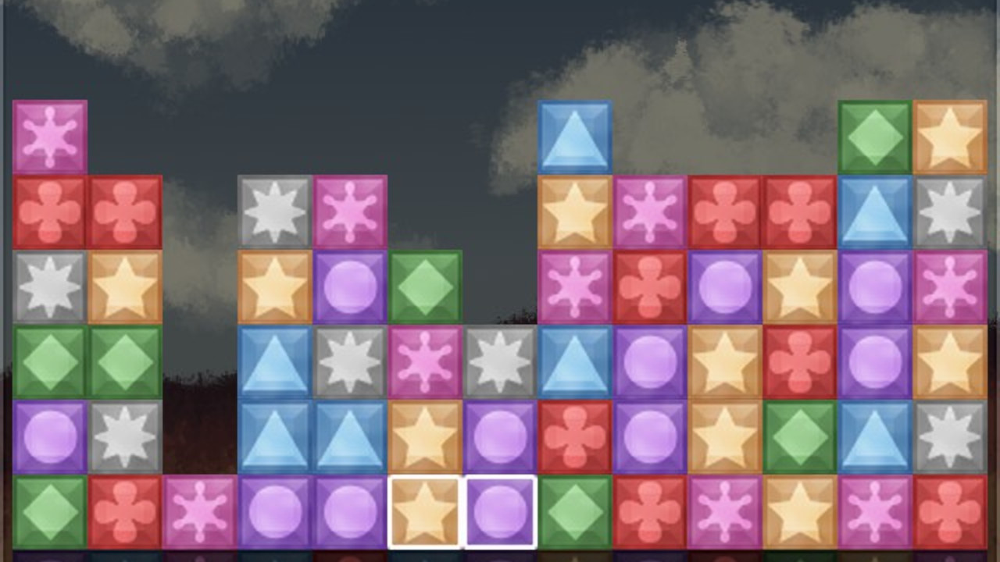

My name is Justin, and I write free software (the
libre kind). I generally stick to game development, but I’ve contributed a little to some non-game projects as well. Besides video games, my interests include:
- Japanese anime and manga. My two stand-out favorite series are Hidamari Sketch and Outlaw Star.
- Late 80s/early 90s Lego, namely the Town, Space, and Castle themes.
- Tinkering with hobby electronics, Arduino, etc. I'm fairly new to this, so there's much for me to learn. Big Clive's Youtube channel is the catalyst for my continued interest in electronics.
If you wish to contact me, you can do so via
email.
You can also find me on:
Flare
Game
Clint Bellanger’s Flare is a fantastic free-software action RPG, similar to the Diablo series. I’ve been helping with development since March of 2012 and have since become the lead developer.

Freeblocks
Game
Created as my January 2013 OneGameAMonth project, Freeblocks is a game similar to Tetris Attack. While not a direct clone, it’s still quite fun to play.
feedreader
Utility
A simple GTK2-based RSS reader that sits in the system tray. It displays a simple list of articles per feed, each of which can be opened in a web browser. I don’t personally use this anymore, but it was my first experience making something with GTK2.
keylock-tray
Utility
Much to my disappointment, many modern laptops don't have LEDs for CapsLock and NumLock. So I created a program that displays their status as tray icons. It uses GTK2 and XKB and features command line flags to change the background/foreground colors of the icons.